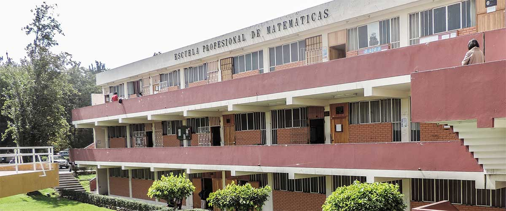
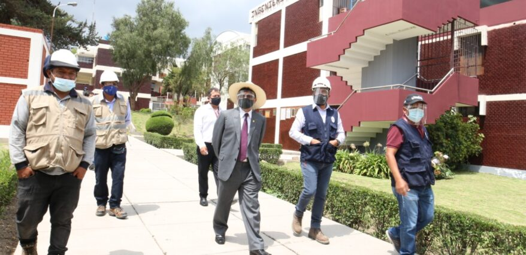
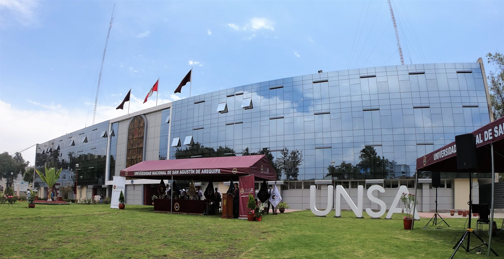

La universidad en la que actualmente estudio es la UNSA (Universidad Nacional de san Agustin), me agradan las clases y tambien los temas que se tratan, aunque este 2do semestre me toco un horario mucho mas fragmentado
Ingenieria de sistemas
Mi carrera, aunque tambien centrada en la tecnologia, profundiza principalmente la creacion de algoritmos, busqueda de patrones, etc aspectos que son fundamentales si alguien quiere crear sistemas de calidad
Imagenes de la universidad


